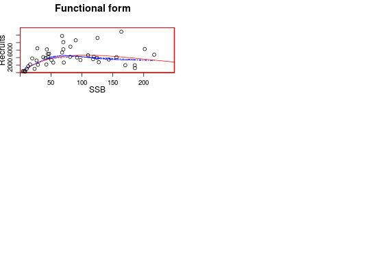
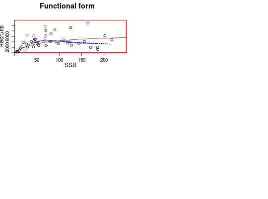

Class FLSR
Description
Class for stock-recruitment models.
Details
A series of commonly-used stock-recruitment models are already available,
including the corresponding likelihood functions and calculation of initial
values. See SRModels for more details and the exact
formulation implemented for each of them.
Slots
- name
- Name of the object (
character). - desc
- Description of the object (
character). - range
- Range (
numeric). - rec
- Recruitment series (
FLQuant). - ssb
- Index of reproductive potential, e.g. SSB or egg oor egg production (
FLQuant). - fitted
- Estimated values for rec (
FLQuant). - residuals
- Residuals obtained from the model fit (
FLArray). - covar
- Covariates for SR model (
FLQuants). - model
- Model formula (
formula). - gr
- Function returning the gradient of the likelihood (
function). - logl
- Log-likelihood function (
function). - initial
- Function returning initial parameter values for the optimizer (
function). - params
- Estimated parameter values (
FLPar). - logLik
- Value of the log-likelihood (
logLik). - vcov
- Variance-covariance matrix (
array). - details
- Extra information on the model fit procedure (
list). - logerror
- Is the error on a log scale (
logical). - distribution
- (
factor). - hessian
- Resulting Hessian matrix from the fit (
array).
Examples
# Create an empty FLSR object. sr1 <- FLSR() # Create an FLSR object using the existing SR models. sr2 <- FLSR(model = 'ricker') sr2@modelrec ~ a * ssb * exp(-b * ssb) <environment: 0xcbd2080>sr2@initialfunction(rec, ssb) { # The function to provide initial values res <-coefficients(lm(log(c(rec)/c(ssb))~c(ssb))) return(FLPar(a=max(exp(res[1])), b=-max(res[2])))} <environment: 0xcbd2080> attr(,"lower") [1] -Inf -Inf attr(,"upper") [1] Inf Infsr2@loglfunction(a, b, rec, ssb) loglAR1(log(rec), log(a*ssb*exp(-b*ssb))) <environment: 0xcbd2080>sr3 <- FLSR(model = 'bevholt') sr3@modelrec ~ a * ssb/(b + ssb) <environment: 0xcb7fb28>sr3@initialfunction(rec, ssb) { a <- max(quantile(c(rec), 0.75, na.rm = TRUE)) b <- max(quantile(c(rec)/c(ssb), 0.9, na.rm = TRUE)) return(FLPar(a = a, b = a/b))} <environment: 0xcb7fb28> attr(,"lower") [1] -Inf -Inf attr(,"upper") [1] Inf Infsr3@loglfunction(a, b, rec, ssb) loglAR1(log(rec), log(a*ssb/(b+ssb))) <environment: 0xcb7fb28># Create an FLSR using a function. mysr1 <- function(){ model <- rec ~ a*ssb^b return(list(model = model))} sr4 <- FLSR(model = mysr1) # Create an FLSR using a function and check that it works. mysr2 <- function(){ formula <- rec ~ a+ssb*b logl <- function(a, b, sigma, rec, ssb) sum(dnorm(rec, a + ssb*b, sqrt(sigma), TRUE)) initial <- structure(function(rec, ssb) { a <- mean(rec) b <- 1 sigma <- sqrt(var(rec)) return(list(a=a, b=b, sigma=sigma))}, lower = c(0, 1e-04, 1e-04), upper = rep(Inf, 3)) return(list(model = formula, initial = initial, logl = logl)) } ssb <- FLQuant(runif(10, 10000, 100000)) rec <- 10000 + 2*ssb + rnorm(10,0,1) sr5 <- FLSR(model = mysr2, ssb = ssb, rec = rec) sr5.mle <- fmle(sr5)Warning message: NAs introduced by coercion Warning message: NAs introduced by coercionNelder-Mead direct search function minimizer function value for initial parameters = 554115.051769 Scaled convergence tolerance is 0.00825696 Stepsize computed as 13800.767039 BUILD 4 105538524483498.343750 412674.759608 LO-REDUCTION 6 22515209257883.398438 412674.759608 HI-REDUCTION 8 5767991525929.689453 412674.759608 HI-REDUCTION 10 1459484241606.864502 412674.759608 HI-REDUCTION 12 366810527436.382751 412674.759608 HI-REDUCTION 14 91803069171.035065 412674.759608 HI-REDUCTION 16 22891292289.890495 412674.759608 HI-REDUCTION 18 5679482366.678130 412674.759608 HI-REDUCTION 20 1396680484.258992 412674.759608 HI-REDUCTION 22 337570281.007102 412674.759608 HI-REDUCTION 24 78777519.329031 412674.759608 HI-REDUCTION 26 17095448.214260 412674.759608 HI-REDUCTION 28 3185956.793778 412674.759608 HI-REDUCTION 30 797172.141155 412674.759608 REFLECTION 32 554115.051769 189517.115932 LO-REDUCTION 34 464468.025625 189517.115932 LO-REDUCTION 36 412674.759608 128942.723565 HI-REDUCTION 38 264800.899378 128942.723565 HI-REDUCTION 40 189517.115932 128942.723565 HI-REDUCTION 42 149263.245116 119528.999786 HI-REDUCTION 44 142998.934205 115528.696913 HI-REDUCTION 46 128942.723565 112184.074035 HI-REDUCTION 48 119528.999786 108463.757156 HI-REDUCTION 50 115528.696913 108463.757156 LO-REDUCTION 52 112184.074035 107004.019563 REFLECTION 54 108907.166532 104479.179805 LO-REDUCTION 56 108463.757156 104132.480930 REFLECTION 58 107004.019563 102877.248900 HI-REDUCTION 60 104479.179805 102877.248900 LO-REDUCTION 62 104132.480930 102332.045246 HI-REDUCTION 64 103048.842519 101788.585527 EXTENSION 66 102877.248900 99468.471607 LO-REDUCTION 68 102332.045246 99468.471607 LO-REDUCTION 70 101788.585527 99468.471607 EXTENSION 72 100562.624253 95966.472448 EXTENSION 74 99861.685715 93363.780394 LO-REDUCTION 76 99468.471607 93363.780394 EXTENSION 78 95966.472448 86373.421152 LO-REDUCTION 80 95693.473749 86373.421152 EXTENSION 82 93363.780394 77048.330834 EXTENSION 84 87826.264104 67149.344801 EXTENSION 86 86373.421152 56915.243849 EXTENSION 88 77048.330834 36459.952242 EXTENSION 90 67149.344801 21607.804003 EXTENSION 92 56915.243849 5632.826701 EXTENSION 94 36459.952242 2014.762646 LO-REDUCTION 96 21607.804003 566.940284 LO-REDUCTION 98 5632.826701 566.940284 HI-REDUCTION 100 2207.564404 473.332832 HI-REDUCTION 102 2014.762646 473.332832 LO-REDUCTION 104 825.182023 250.604690 HI-REDUCTION 106 566.940284 194.314993 HI-REDUCTION 108 473.332832 194.314993 HI-REDUCTION 110 250.604690 194.314993 HI-REDUCTION 112 236.393511 147.820390 REFLECTION 114 208.527527 86.833933 LO-REDUCTION 116 194.314993 86.833933 HI-REDUCTION 118 147.820390 86.833933 HI-REDUCTION 120 98.288643 86.833933 LO-REDUCTION 122 93.480649 76.448750 HI-REDUCTION 124 89.111024 70.128435 LO-REDUCTION 126 86.833933 70.128435 LO-REDUCTION 128 76.448750 67.675538 LO-REDUCTION 130 72.896672 67.269796 HI-REDUCTION 132 70.128435 67.244314 LO-REDUCTION 134 67.675538 66.727641 LO-REDUCTION 136 67.269796 66.727641 HI-REDUCTION 138 67.244314 66.531734 LO-REDUCTION 140 66.775797 66.531734 LO-REDUCTION 142 66.727641 66.514292 HI-REDUCTION 144 66.587285 66.514292 HI-REDUCTION 146 66.543706 66.514292 HI-REDUCTION 148 66.531734 66.510575 HI-REDUCTION 150 66.525608 66.510575 Exiting from Nelder Mead minimizer 152 function evaluations usedsr5.nls <- nls(sr5) # NS Herring stock-recruitment dataset data(nsher) # already fitted with a Ricker SR model summary(nsher)An object of class "FLSR" Name: Description: Range: min minyear max maxyear 0 1960 0 2004 Quant: age rec : [ 1 45 1 1 1 1 ], units = 10^3 ssb : [ 1 45 1 1 1 1 ], units = t*10^3 residuals : [ 1 45 1 1 1 1 ], units = NA fitted : [ 1 45 1 1 1 1 ], units = 10^3 Model: rec ~ a * ssb * exp(-b * ssb) <environment: 0xb48ee20> Parameters: params iter a b 1 119.4 0.009451 Log-likelihood: 15.862(0) Variance-covariance: a b a 255.33882 1.809e-02 b 0.01809 1.993e-06plot(nsher)
# change model model(nsher) <- bevholt() # fit through MLE nsher <- fmle(nsher)Nelder-Mead direct search function minimizer function value for initial parameters = -10.336211 Scaled convergence tolerance is 1.54022e-07 Stepsize computed as 501.110000 BUILD 3 44.842344 -11.603908Warning message: NaNs producedHI-REDUCTION 5 31.685209 -11.603908Warning message: NaNs producedHI-REDUCTION 7 17.913114 -11.603908Warning message: NaNs producedHI-REDUCTION 9 5.415279 -11.603908Warning message: NaNs producedHI-REDUCTION 11 -3.412974 -11.603908 HI-REDUCTION 13 -8.018030 -11.603908 LO-REDUCTION 15 -10.336211 -11.603908 LO-REDUCTION 17 -11.081040 -11.603908 EXTENSION 19 -11.295930 -12.061705 LO-REDUCTION 21 -11.603908 -12.061705 REFLECTION 23 -11.813826 -12.087620 REFLECTION 25 -12.061705 -12.199591 LO-REDUCTION 27 -12.087620 -12.199591 LO-REDUCTION 29 -12.158184 -12.199591 LO-REDUCTION 31 -12.191726 -12.199591 HI-REDUCTION 33 -12.192269 -12.199591 HI-REDUCTION 35 -12.197784 -12.199591 LO-REDUCTION 37 -12.198015 -12.199591 HI-REDUCTION 39 -12.199555 -12.199776 REFLECTION 41 -12.199591 -12.200058 HI-REDUCTION 43 -12.199776 -12.200092 HI-REDUCTION 45 -12.200058 -12.200142 HI-REDUCTION 47 -12.200092 -12.200155 HI-REDUCTION 49 -12.200142 -12.200160 HI-REDUCTION 51 -12.200155 -12.200177 HI-REDUCTION 53 -12.200160 -12.200177 LO-REDUCTION 55 -12.200171 -12.200179 HI-REDUCTION 57 -12.200177 -12.200179 HI-REDUCTION 59 -12.200178 -12.200179 HI-REDUCTION 61 -12.200179 -12.200179 HI-REDUCTION 63 -12.200179 -12.200179 HI-REDUCTION 65 -12.200179 -12.200179 Exiting from Nelder Mead minimizer 67 function evaluations usedplot(nsher)